第 8 章 生成对抗网络（GAN）#
本章解决：如何让神经网络"无中生有"——生成对抗网络（GAN）以极小极大博弈组织两个网络：生成器从随机噪声合成图像，判别器辨别真假，两者在对抗中共同提升。介绍了 GAN 的博弈目标与训练方式、生成质量评估指标与典型应用，并以 DCGAN 在 Fashion-MNIST 上完成一次完整训练。
8.0 本章导图#
8.1 GAN 架构#
生成对抗网络（Generative Adversarial Networks, GAN）由 Ian Goodfellow 与蒙特利尔大学的研究者（含 Yoshua Bengio）于 2014 年提出。Yann LeCun（Facebook AI 研究总监）对它的评价："过去 10 年机器学习领域最有趣的想法。"兴奋有充分理由——GAN 最出名的本领是创造超逼真的图像、视频、音乐和文本。
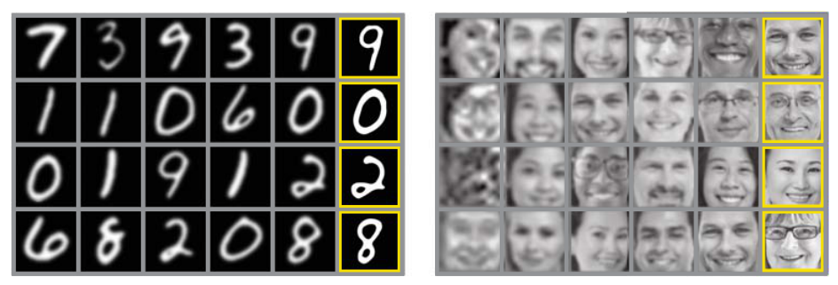
前几章的深度神经网络都在做确定性任务：分类、检测，答案唯一。本章进入另一个世界——生成模型（Generative Models）：给一个特定领域的训练集，模型的任务是产出从未存在过、但看起来像真实数据的新内容。它像会"想象"：新的人脸、新的世界、新的现实。
长期以来"想象与创造"是人类对计算机的优势——计算机擅长回归、分类、聚类，不会创作。生成网络改变了一切：通过学习模仿任意数据分布，计算机可以创作图像、音乐、语音、文章。作者称它们为"机器人艺术家"，并把 GAN 视为通往**通用人工智能（Artificial General Intelligence, AGI）**的重要垫脚石——一个能在几乎任何领域获取专长的系统，从图像到语言再到写十四行诗的创作能力。
对抗训练：两个网络的军备竞赛#
GAN 的核心思想是对抗训练（Adversarial Training）：让两个神经网络互相竞争。
| 网络 | 职责 |
|---|---|
| Generator 生成器 | 把随机噪声变成"像从原始数据集里采样出来"的观测 |
| Discriminator 判别器 | 预测一个观测来自原始数据集，还是生成器的伪造品 |
这种竞争让它们能模仿任意数据分布。作者给了两个比喻：
- 两个拳击手（图 8.2）：为了赢下比赛，双方都在学习对方的招式和技术。开局彼此了解不多，越打越懂对方、越打越强。
- 假钞贩子 vs 警察（图 8.3）：猫鼠游戏。贩子学着把假钞造得更真，警察学着把假钞识别得更准。双方都在动态升级，每一方都在学习对方的方法。
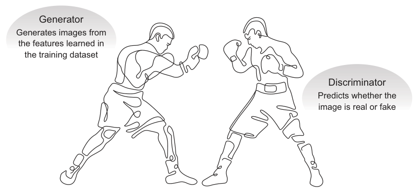
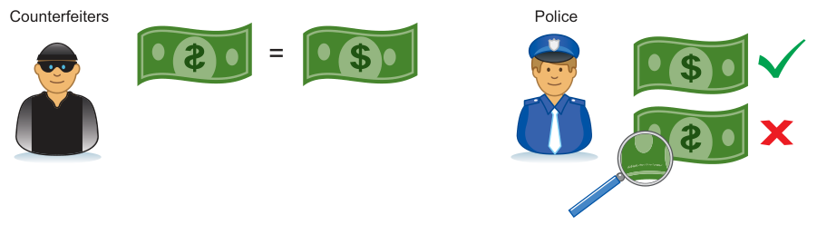
整体架构：三步走#
图 8.4 是 GAN 架构全图，一次前向经历三步：
- 生成器拿进随机数，返回一张图像；
- 这张生成图与来自真实数据集的图像流一起喂给判别器；
- 判别器同时接收真图和假图，返回概率——0 到 1 之间的数字：1 = 判真，0 = 判假。
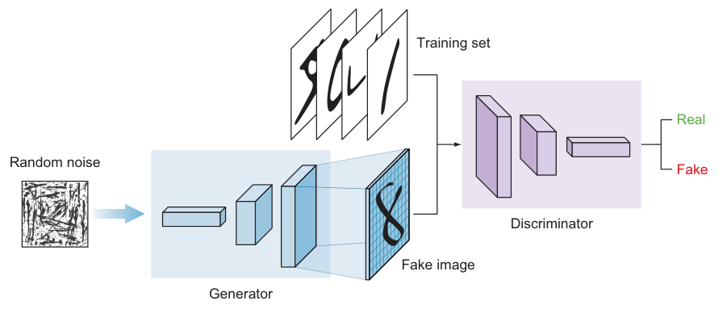
细看两个网络会发现一个有趣现象：生成器是一个倒置的 ConvNet——从扁平向量开始，图像被逐级放大，直到与训练集图像尺寸相当。本章后面展开生成器架构时再深挖。
8.1.1 深度卷积 GAN（DCGAN）#
2014 年的原论文里，生成器和判别器用的都是多层感知机（MLP）。后来的研究证明：给判别器换上卷积层能获得更强的预测力，进而带动生成器和整体模型的精度。这种 GAN 叫深度卷积 GAN（Deep Convolutional GAN, DCGAN），由 Alec Radford 等人于 2016 年提出。如今所有 GAN 架构都包含卷积层，"DC"已是不言自明的事——所以本章后面把 GAN 和 DCGAN 混着叫。（MLP 与 CNN 的差异回顾第 2、3 章。）
8.1.2 判别器模型#
判别器的目标：判断图像是真还是假。这就是一个典型的监督二分类问题——直接用前几章的传统分类器网络：卷积层堆叠 + 全连接输出层 + sigmoid 激活。用 sigmoid 是因为二分类：输出 0~1 的概率，0 = 生成器造的假图，1 = 100% 真图。
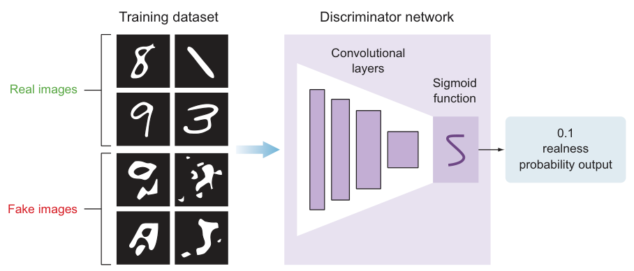
训练判别器非常直白：喂带标签的图像——真图来自训练集，假图来自生成器的输出。PyTorch 实现如下（结构与超参与书一致）：
# ===== 书 8.1.2 节：判别器 =====
import torch
import torch.nn as nn
class Discriminator(nn.Module):
def __init__(self):
super().__init__()
self.net = nn.Sequential(
# 输入 (1, 28, 28)
nn.Conv2d(1, 32, 3, stride=2, padding=1), # 3×3 卷积、步幅 2 → 32 × 14 × 14
nn.LeakyReLU(0.2), # 负斜率 0.2：负值不全"杀死"，保留梯度通路
nn.Dropout(0.25), # 25% 随机失活
nn.Conv2d(32, 64, 3, stride=2, padding=1), # → 64 × 7 × 7
nn.ZeroPad2d((0, 1, 0, 1)), # 补零 7×7 → 8×8（凑成偶数，便于继续减半）
# momentum=0.2：running stats 更新系数——
# new_running = 0.8 × 旧统计量 + 0.2 × 新批统计量
nn.BatchNorm2d(64, momentum=0.2),
nn.LeakyReLU(0.2),
nn.Dropout(0.25),
nn.Conv2d(64, 128, 3, stride=2, padding=1), # → 128 × 4 × 4
nn.BatchNorm2d(128, momentum=0.2),
nn.LeakyReLU(0.2),
nn.Dropout(0.25),
nn.Conv2d(128, 256, 3, stride=1, padding=1), # → 256 × 4 × 4
nn.BatchNorm2d(256, momentum=0.2),
nn.LeakyReLU(0.2),
nn.Dropout(0.25),
nn.Flatten(), # → 4096
nn.Linear(4096, 1), # 全连接收敛到单个分数
nn.Sigmoid(), # 二分类：输出"真图概率"
)
def forward(self, x):
return self.net(x)
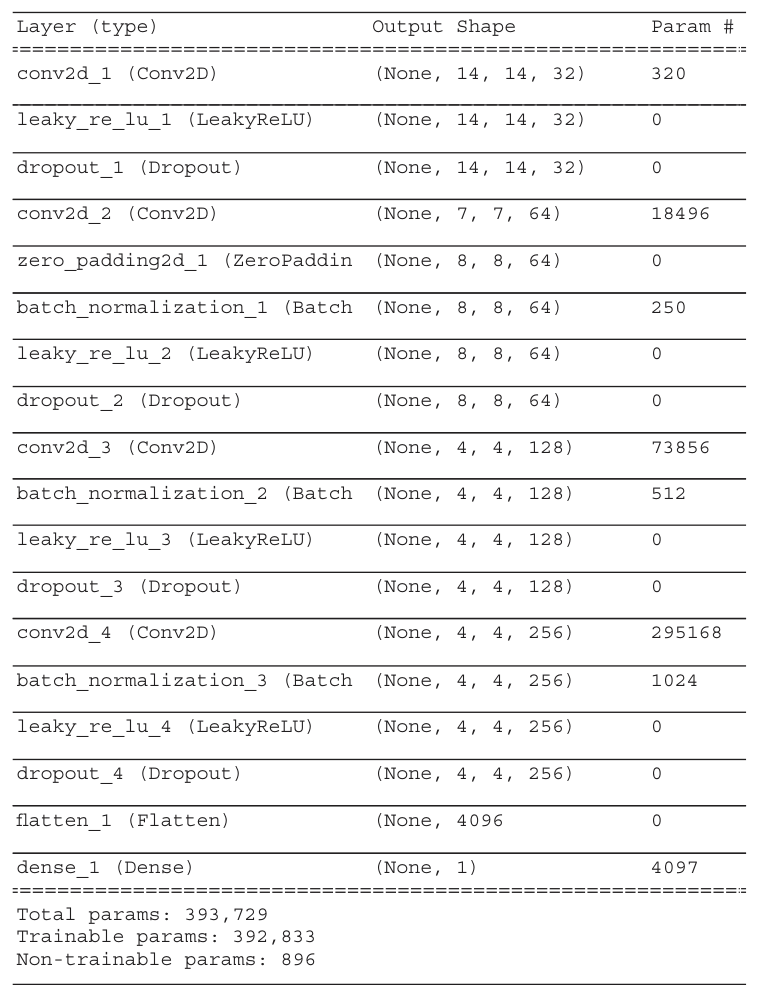
图 8.6 的 summary 里没有新东西：卷积、BN、激活、Dropout 逐层堆叠，全按第 3~5 章的老配方。注意特征图尺寸的变化——宽高逐层缩小，深度逐层增加：28×28×1 → 14×14×32 → 7×7×64 →（补零 8×8）→ 4×4×128 → 4×4×256 → 扁平化 4096 → 输出 1。这正是传统 CNN 的预期行为。下一节看生成器里形状怎么反过来变。
8.1.3 生成器模型#
生成器拿进随机数据，模仿训练集生成假图，目标是骗过判别器。每轮迭代它都在变强——但判别器同时在变强，所以生成器必须"魔高一尺道高一丈"地持续进化。
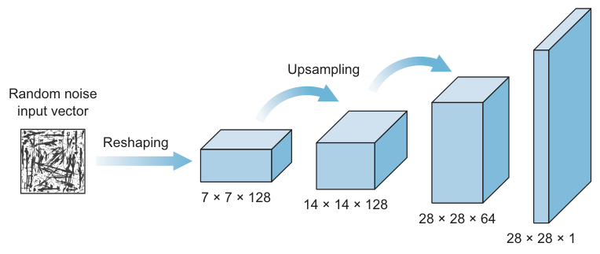
生成器看起来像倒置的 ConvNet：输入是随机噪声向量，先 Reshape 成带宽、高、深的立方体体积，把它当特征图，送进若干卷积层，最终"画"出一张图。
侧栏：上采样（Upsampling）——把特征图放大
传统 CNN 用池化层下采样；生成器反着来，用上采样层放大特征图——做法是把输入的每一行、每一列像素重复若干次。PyTorch 的 nn.Upsample(scale_factor=2, mode='nearest') 把每行每列重复 2 次（图 8.8）；scale_factor=3 重复 3 次（图 8.9）。搭生成器时不断加上采样层，直到特征图尺寸与训练集图像一致。
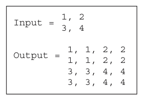
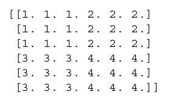
生成器（教学版）的 PyTorch 实现，结构与书一致：
# ===== 书 8.1.3 节：生成器（教学版） =====
LATENT_DIM = 100 # 噪声向量长度。书选 100 为了让网络简单
class Generator(nn.Module):
def __init__(self, latent_dim=LATENT_DIM):
super().__init__()
self.fc = nn.Linear(latent_dim, 128 * 7 * 7) # 全连接：100 维噪声 → 6272 维
# 8.1.3 教学版的结构：
# Linear(relu) → Reshape(7,7,128) → 2 倍上采样 → Conv128 → BN → ReLU
# → 2 倍上采样 → Conv64 → BN → ReLU → Conv1 → tanh
# 上采样用 stride=2 的转置卷积（可学习的上采样），一步把宽高翻倍
self.net = nn.Sequential(
nn.Unflatten(1, (128, 7, 7)), # Reshape → 7×7×128
nn.ConvTranspose2d(128, 128, 4, 2, 1), # 7×7 → 14×14
nn.BatchNorm2d(128, momentum=0.2), # momentum：running stats 更新系数
nn.ReLU(),
nn.ConvTranspose2d(128, 64, 4, 2, 1), # 14×14 → 28×28
nn.BatchNorm2d(64, momentum=0.2),
nn.ReLU(),
nn.Conv2d(64, 1, 3, padding=1), # → 1×28×28
nn.Tanh(), # 输出压到 [-1,1]——与数据归一化 X/127.5-1 严格匹配
)
def forward(self, z):
x = torch.relu(self.fc(z)) # 全连接 + ReLU → 6272 维向量
return self.net(x)
拓展：nn.Upsample+卷积 与转置卷积，选哪个？
PyTorch 里上采样有两种常见写法：最近邻复制 + 卷积——nn.Upsample(scale_factor=2, mode='nearest') 先把每行每列复制一遍，再接 3×3 的 nn.Conv2d；或者转置卷积——nn.ConvTranspose2d(kernel_size=4, stride=2, padding=1) 一步把宽高翻倍。两者尺寸效果相同，区别在于：前者是先复制后卷积，上采样本身没有参数；后者是可学习的上采样。转置卷积若核尺寸不能被步幅整除，输出会出现棋盘伪影（checkerboard artifacts）——所以约定 kernel 能被 stride 整除（如 4 与 2）。DCGAN 论文和许多经典实现选择"复制+卷积"正是为了避开棋盘效应；本笔记用 kernel 4 ÷ stride 2 整除的转置卷积，同样避开棋盘伪影。两种写法你都应该认识。
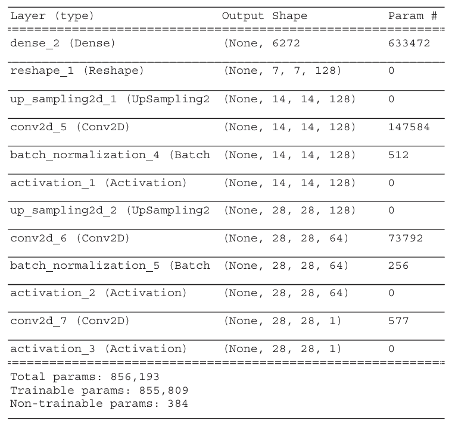
盯着图 8.10 的 Output Shape 列看：从 1D 的 6272 维向量开始，Reshape 成 7×7×128 体积，宽高两次上采样：7×7 → 14×14 → 28×28；深度从 128 → 64 → 1 递减——这是为灰度 MNIST 项目定制的。要生成彩色图，最后一层卷积的 filters 设为 3 即可。28×28 时不再上采样，因为已经等于 MNIST 图像尺寸（自己的问题自己调）。
生成器的两个版本（8.1.3 教学版 vs 8.4 项目版）
书里生成器出现两次，结构相同（全连接 → Reshape 7×7×128 → 两次上采样 → 128 通道卷积 → 64 通道卷积 → 1 通道输出），但有两处差异： 1. 激活顺序：教学版是 Conv ⇒ BN ⇒ ReLU；项目版代码的实际顺序却是 Conv ⇒ ReLU ⇒ BN——而项目节文字明明写 scheme 是 "convolution ⇒ batch normalization ⇒ ReLU"，代码与文字自相矛盾。标准 DCGAN 用前者，本笔记统一按 Conv ⇒ BN ⇒ ReLU 实现。 2. 输出层激活：教学版最后是 tanh；项目版却写成 ReLU。数据归一化到 [-1,1] 时，tanh 才是正确搭配（详见 8.4 Step 2 的 warning）。
8.1.4 训练 GAN#
两个模型各自登场后，现在拼起来端到端训练。两个网络的目标背道而驰：
- 判别器训练成一个更好的分类器——最大化给真图（训练样本）和假图（生成器产物）都打对标签的概率。警察越来越会辨伪钞。
- 生成器训练成一个更好的伪造者——最大化骗过判别器的机会。双方都在进步。
训练 GAN 涉及两个过程：
- 训练判别器：直白的监督训练。喂有标签图像——假图来自生成器、真图来自训练集——学会二分类，sigmoid 输出。没有新东西。
- 训练生成器：这是 GAN 训练里唯一 tricky 的地方。生成器没法单独训练——它需要判别器告诉它"伪造得像不像"。所以构建一个**组合网络（combined network）**来训生成器，里面同时装着生成器和判别器。
把训练过程想成两条平行车道：一条车道单独训练判别器；另一条车道是组合模型，负责训练生成器。
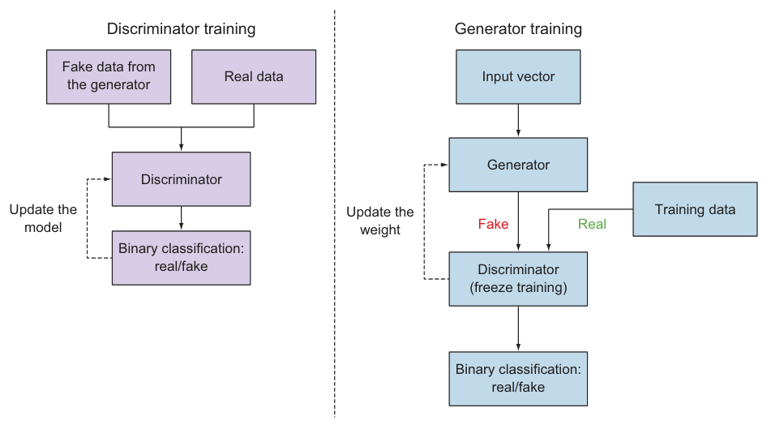
**为什么要冻结判别器？**训练组合模型时，我们把判别器的权重冻结（freeze），因为这条车道只训练生成器。机制如下：
- 生成器和判别器的损失函数方向相反（一个想让假图判真、一个想让假图判假）。如果不冻结 D 的权重，它会被拉着朝"更容易把生成图判为真"的方向走——这不是我们想要的。
- 冻结 D 不影响车道 1 的训练：轮到阶段 1 更新判别器时，把
requires_grad设回True即可照常训练 D。可以这样想象：有两个判别器模型（实际上只有一个，但这么想更容易理解）。
两个过程都遵循第 2 章讲过的标准神经网络训练流程：前向 → 预测 → 算误差 → 反向传播。区别只在误差流向哪里：训练判别器时，误差回传更新判别器的权重；训练组合模型时，误差回传更新生成器的权重。
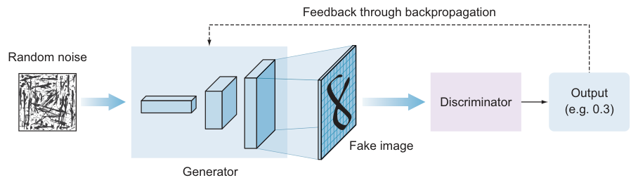
训练判别器：一次梯度更新拆成四步#
判别器就是普通的二分类器：损失用二元交叉熵（nn.BCELoss()，因为 D 的最后一层已带 Sigmoid，输出就是概率），优化器按书的超参 Adam(lr=0.0002, beta1=0.5)。对一个批次做一次梯度更新，PyTorch 明确拆成四步：清梯度 → 前向+算损失 → 反向 → 更新权重：
# ===== 书 8.1.4 节：判别器的一次梯度更新 =====
criterion = nn.BCELoss() # 二元交叉熵损失（D 已带 Sigmoid）
optimizer_D = torch.optim.Adam(discriminator.parameters(),
lr=0.0002, betas=(0.5, 0.999))
# 书超参：Adam(lr=0.0002, beta_1=0.5)，betas=(beta1, beta2)=(0.5, 0.999)
valid = torch.ones(batch_size, 1) # 真图的目标标签：全 1
fake = torch.zeros(batch_size, 1) # 假图的目标标签：全 0
# -- 真图这批 --
optimizer_D.zero_grad() # ① 清空梯度
d_loss_real = criterion(discriminator(imgs), valid) # ② 前向 + 损失
d_loss_real.backward() # ③ 反向传播
optimizer_D.step() # ④ 更新权重——一次单批梯度更新完成
# -- 假图这批（同上四步） --
optimizer_D.zero_grad()
d_loss_fake = criterion(discriminator(gen_imgs.detach()), fake)
d_loss_fake.backward()
optimizer_D.step()
训练生成器：组合模型#
现在到 GAN 训练里 tricky 的部分。判别器可以脱离生成器单独训练，生成器却离不开判别器——需要它当"考官"。于是把两个模型串成一条组合网络：噪声 z 进生成器得到假图，假图直接进判别器打分。PyTorch 里不需要为这条链封装新的模型对象——一行串联前向就是组合模型（正是图 8.12 那条链路）：
# ===== 书 8.1.4 节：组合网络就是一行串联前向 =====
# 噪声 → 生成器 → 假图 → 判别器 → "真实度概率"
valid = discriminator(generator(noise))
# 拿全 1 的目标标签算损失并反向传播，误差就会一路穿回生成器
反向传播前必须先冻结判别器。"冻结"在 PyTorch 里就是关掉参数的梯度开关；两条车道各用一个只装自家参数的优化器：
# ===== 书 8.1.4 节：双优化器与冻结 =====
generator = Generator()
discriminator = Discriminator()
# —— 车道 1 的优化器：只管判别器的参数 ——
optimizer_D = torch.optim.Adam(discriminator.parameters(), lr=0.0002, betas=(0.5, 0.999))
# ★ 冻结判别器：关掉所有参数的 requires_grad。
# 冻结后反向传播仍会"穿过"判别器把梯度送给生成器，
# 只是判别器自己的参数不再累积梯度、不会被更新。
# 车道 1（训 D）使用前要把 requires_grad 设回 True——
# 见下方训练循环里的 freeze/unfreeze 开关。
for p in discriminator.parameters():
p.requires_grad = False
# —— 车道 2 的优化器：只管生成器的参数 ——
optimizer_G = torch.optim.Adam(generator.parameters(), lr=0.0002, betas=(0.5, 0.999))
完整训练循环：一场博弈的两次前向、两次反向#
这是本章最值得逐行读的代码。一个 epoch 内，两条车道各跑一遍——两次前向、两次反向，博弈全在这个循环里：
# ===== 书 8.1.4 / 8.4 Step 6：训练循环（GAN 的心脏） =====
import numpy as np
BATCH_SIZE = 32 # 与书一致
def freeze(net): # 冻结：参数停止累积梯度（考官模式，只打分不学习）
for p in net.parameters():
p.requires_grad = False
def unfreeze(net): # 解冻：恢复梯度累积（考生模式，准备被更新）
for p in net.parameters():
p.requires_grad = True
for epoch in range(epochs):
# ---------- 阶段 1：训练判别器（车道 1，普通监督学习） ----------
unfreeze(discriminator) # ★ 本车道要更新的正是 D，先打开梯度开关
# 1a. 从训练集随机抽一批真图（相当于书的 X_train[idx]）
idx = np.random.randint(0, len(dataset), BATCH_SIZE)
imgs = torch.stack([dataset[i][0] for i in idx]) # 真图批次
valid = torch.ones(BATCH_SIZE, 1) # 真图目标 = 1
fake = torch.zeros(BATCH_SIZE, 1) # 假图目标 = 0
# 1b. 生成器造一批假图（此步不更新 G）
noise = torch.randn(BATCH_SIZE, LATENT_DIM) # z ~ N(0, 1)
with torch.no_grad(): # 造图不需要 G 的梯度
gen_imgs = generator(noise)
# 1c. 判别器两次前向：真图想判 1，假图想判 0
d_loss_real = criterion(discriminator(imgs), valid)
d_loss_fake = criterion(discriminator(gen_imgs.detach()), fake)
# ↑ detach() 是关键：把假图从生成器的计算图上摘下来，
# 这次反向传播只会更新判别器，不会顺着链路改生成器
d_loss = (d_loss_real + d_loss_fake) / 2
# ↑ 对应书里的 0.5 * np.add(d_loss_real, d_loss_fake)
optimizer_D.zero_grad() # 清判别器梯度
d_loss.backward() # 误差只回传到判别器 ← 第一次反向传播
optimizer_D.step() # 更新判别器权重
# ---------- 阶段 2：训练生成器（车道 2，噪声 → G → D 串联） ----------
freeze(discriminator) # ★ 考官进场：只打分，不学习
# 2a. 新噪声，整条链前向：噪声 → 生成器 → 判别器
noise = torch.randn(BATCH_SIZE, LATENT_DIM)
g_loss = criterion(discriminator(generator(noise)), valid)
# ↑ 目标标签是 valid（全 1）：让判别器把假图判成真图！
# ↑ D 的参数 requires_grad=False，梯度穿过 D 直达生成器
optimizer_G.zero_grad() # 清生成器梯度
g_loss.backward() # 反向传播穿 D（D 不动），只有 G 收到梯度 ← 第二次反向传播
optimizer_G.step() # 更新生成器权重
# ---------- 观察进度 ----------
if epoch % 50 == 0:
print(f"{epoch} [D loss: {d_loss:.6f}] [G loss: {g_loss:.6f}]")
plot_generated_images(epoch, generator) # 存一批生成图，肉眼评估
训练轮次：肉眼看图，决定何时停#
两条车道在每个 epoch 里各跑一遍（先训 D、再训 G），生成器与判别器都持续进步。观察 GAN 表现的实用手段：每隔一个（或若干个）epoch 打印一批生成图，看看生成器把训练集学得怎么样。
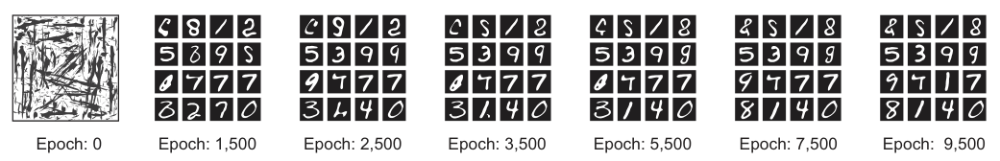
epoch 0 时输出只是不带任何训练集特征的噪声；随着训练推进，生成器越来越擅长造出能骗过判别器的高质量仿制品。训练到生成效果满意即可停——把生成器模型部署出去。
8.1.5 GAN minimax 目标函数#
GAN 的训练更像一场零和博弈（zero-sum game），而不是一个优化问题。零和博弈里，总分在玩家之间分配：一方得分，另一方必然失分。这在 AI 里叫 minimax 博弈论——一种决策算法，常用于回合制双人游戏，目标是找到最优的下一步棋。
侧栏：minimax 博弈论
双人零和博弈中，一方赢 = 另一方输，不存在合作。井字棋、双陆棋、播棋、国际象棋都是典型。**maximizer（最大化方）**争取尽可能高的分；**minimizer（最小化方）**反着来，通过应对着法压低分数。某个局面下 maximizer 占上风，分值倾向为正；minimizer 占上风则为负。分值由每种游戏特有的启发式方法计算。
GAN 玩的就是 minimax 博弈：整个网络试图优化下面的价值函数 \(V(D,G)\)：
先钉死符号（原书表 8.1 重排）：
| 符号 | 含义 |
|---|---|
| \(G\) | 生成器 |
| \(D\) | 判别器 |
| \(z\) | 喂给生成器的随机噪声 |
| \(G(z)\) | 生成器拿噪声 \(z\) 造出的"仿制真图" |
| \(D(G(z))\) | 判别器对假图 \(G(z)\) 的输出概率 |
| \(\log D(x)\) | 判别器对真实数据 \(x\) 输出概率的对数 |
逐项人话解读——判别器的输入有两个来源，公式两项正好各对应一个：
- 第一项 \(\mathbb{E}_{x \sim p_{\text{data}}}[\log D(x)]\)：真数据项。 \(x\) 从真实数据分布里采。判别器想把它判成真图：\(D(x)\) 越接近 1，\(\log D(x)\) 越接近 0（对数里能取到的最大值），这项得分越高。这一项生成器插不上手——真图不是它产的，所以 \(G\) 对第一项无影响，判别器放心里最大化它。
- 第二项 \(\mathbb{E}_{z \sim p_z}[\log(1 - D(G(z)))]\)：假数据项，双方的主战场。 \(z\) 从噪声分布采，\(G(z)\) 是假图。注意里面是 \(1 - D(G(z))\)，即"判别器认为是假的程度"：
- 判别器 \(D\) 想最大化这项：把假图判成假 → \(D(G(z)) \to 0\) → \(\log(1-0) = \log 1 = 0\)，拿到最高分；
- 生成器 \(G\) 想最小化这项：把判别器骗到把假图判成真 → \(D(G(z)) \to 1\) → \(\log(1-1) = \log 0 \to -\infty\)，函数值一路跳水——最小化达成。
**为什么套一层 log？**对数的曲线让"错得越离谱，罚得越狠"：预测接近正确值时惩罚趋近 0，预测滑向错误极端时惩罚冲向无穷大。这就是用对数似然而不直接用概率的原因。
把公式拆成两条训练车道各自的误差函数（与 8.1.4 的两个模型一一对应）：
| 训练车道 | 对应项 | 优化方向 | 直白目标 |
|---|---|---|---|
| 判别器单独训练 | \(\mathbb{E}_{x \sim p_{\text{data}}}[\log D(x)]\) | 最大化 | 真图预测尽量接近 1 |
| 组合模型（训生成器） | \(\mathbb{E}_{z \sim p_z}[\log(1 - D(G(z)))]\) | 最小化 | 让 \(D(G(z))\) 逼近 1（骗过判别器） |
一句话总结整个博弈：\(V(D,G)\) 的目标是对真数据分布最大化 \(D(x)\)、对假数据分布最小化 \(D(G(z))\)。训练早期，生成器还没学会，假图与真图差异巨大，判别器会以高置信度拒收假图。随着训练推进：判别器最大化"给真例和假例都打对标签"的概率；同时生成器最小化"假图被判假"的误差。停止条件：生成器产出的假数据被判别器认成了真数据——警察再也分不出伪钞，博弈到达平衡。
拓展：为什么 GAN 训练出了名地不稳定
普通 CNN 训练是"一个人下山"：损失函数固定，梯度下降一路向下。GAN 是"两个人在冰面上互相借力"：生成器的损失函数本身就是另一个网络，D 每更新一步，G 面对的"地形"就变了——优化目标在漂移，收敛性没有保证。两大典型病症： - 模式坍缩（Mode Collapse）：生成器发现某一两种输出（比如只画一种鞋）就能稳定骗过当前的判别器，于是放弃多样性，反复产出同款。数据分布的众数（mode）被丢掉了。 - 不收敛/震荡：D 与 G 的能力此消彼长，损失曲线来回震荡而不是单调下降。所以 GAN 的 loss 曲线不能拿普通"越低越好"的直觉去读——这也是 8.2 节要引入专门评估指标的原因。
拓展：non-saturating loss——原书公式其实有个实践修正
原书公式里 G 的目标是 \(\min \log(1 - D(G(z)))\)，这在数学上漂亮，训练早期却有个坑：此时 D 一眼识破假图，\(D(G(z)) \approx 0\)，于是 \(\log(1-0)=\log 1 \approx 0\)，函数平坦、梯度几乎消失——G 明明最需要学，却学不动（这就是"饱和"，saturating）。Goodfellow 在论文里给出的实践修正：G 改为最大化 \(\log D(G(z))\)（即 non-saturating loss）。训练初期 \(D(G(z))\) 小，\(\log D(G(z))\) 陡峭，梯度充足；主流实现几乎都采用这一形式。原书正文讲的是原始公式，本笔记代码里看到 nn.BCELoss(D(G(z)), 1)（配全 1 目标标签）别奇怪——那就是 non-saturating 版本。
拓展：判别器太好、太坏，都会卡死生成器
- D 太强：真假一眼分明 → \(D(G(z))\) 恒为 0 → 原始公式里 \(\log(1-D(G(z)))\) 梯度消失，G 收不到有效反馈；这也是实践中常用"给 D 折扣"（如降低 D 的更新频率、label smoothing）的原因。
- D 太弱：随机乱猜 → 反馈是噪声，G 学不到"往哪个方向改"。
- 理想区间是中间：D 大约 50%~70% 准确率时，它给出的信号"有信息量又没严苛到没有梯度"。观察 8.4 图 8.22 的训练日志：D 的准确率在 42%~83% 之间来回晃，恰好是在这个区间内拉扯。
8.2 评估 GAN 模型#
分类、检测模型用损失函数训练到收敛即可。GAN 的生成器不行——它是被一个"学分类真假"的判别器带着训练的，G 与 D 共同维持均衡，没有客观的损失函数可用，也就无法仅凭 loss 客观评估训练进度与模型质量的相对/绝对水平。所以必须看生成图像的质量，并人工检查生成结果。
找评估办法的一个好途径：看论文里作者怎么评估自己的 GAN。Tim Salimans 等人（2016）的做法是人工评估：建了一个 web 界面，在 Amazon Mechanical Turk（MTurk）雇标注员区分"生成数据 vs 真实数据"。人工评估的缺陷也很明显：
- 指标随任务设置和标注员的动机而变；
- 给标注员反馈其错误后，结果剧烈变化——标注员从反馈中学会挑生成图的毛病，评估反而更悲观。
除此之外，Salimans 等人和其他研究者还用了非人工方法。行业至今没有公认的"正确"评估方式，这给研究者与从业者带来四个实际困难：
- 训练中选最佳生成器模型——即决定何时停止训练；
- 挑选能展示 GAN 能力的生成图；
- 对比、基准测试不同的 GAN 架构；
- 调超参与配置后比较结果。
找到量化 GAN 进度与输出质量的手段仍是活跃的研究方向。目前有一套基于生成图像**质量（quality）与多样性（diversity）**的定性与定量技术，其中两个最常用的指标：Inception Score 与 Fréchet Inception 距离（FID）。
8.2.1 Inception Score#
Inception Score 建立在一条启发式上：逼真的样本应该能被预训练网络分类——比如在 ImageNet 上预训练的 Inception 模型（指标名由此而来）。想法非常简单，靠两个值：
| 值 | 含义 | 怎么测 |
|---|---|---|
| 单图可预测性高 | 每张生成图都应该"长得像个明确的类" | 每张生成图过预训练 Inception 分类器，取 softmax 预测；图够好，预测置信度就高 |
| 样本多样性 | 不能让某一个类主导生成分布 | 大量生成图的类分布应尽量均匀 |
具体做法：把大量生成图喂给 Inception 分类器，预测每张图属于各个类的概率，再把两类信息汇总成分数——既抓"单图像不像已知类"，又抓"整批图跨类是否多样"。两个特征都满足时分数大。Inception Score 越高，生成图像质量越好。
8.2.2 Fréchet Inception 距离（FID）#
FID 由 Martin Heusel 等人于 2017 年提出，定位是 Inception Score 的改进版。与 IS 一样，FID 也用 Inception 模型提取图像特征，但思路不同：
- 对一批真实图和一批生成图分别计算 Inception 激活；
- 把两组激活各自汇总成一个多元高斯分布；
- 用 Fréchet 距离（又称 Wasserstein-2 距离）计算这两个分布之间的距离。
拓展：IS vs FID 怎么选
| 维度 | Inception Score | FID |
|---|---|---|
| 只看生成图 | 是（不含真实集对比） | 否（生成分布 vs 真实分布直接比） |
| 分数方向 | 越高越好 | 越低越好（低 = 生成图统计特性更贴近真实图） |
| 样本量要求 | 相对宽松 | 严格——建议 50,000 张；样本太少会高估实际 FID 且方差巨大 |
| 典型坑 | 只奖励"可分类"，与真实分布脱钩 | 计算更贵，依赖 Inception 特征对域的适配度 |
8.2.3 用哪种评估方案#
两种指标都容易实现、都好算（对生成批次算即可）。训练过程中系统性地生成图像并保存模型这一实践应该坚持——它支持事后（post hoc）选模型。IS 与 FID 的深入展开超出本书范围；这是活跃研究领域，截至写作时业内对"唯一最优方案"没有共识。不同分数评估生成过程的不同侧面，单一分数几乎不可能覆盖所有方面。本节目的只是带你见识这些自动化评估技术——人工评估依然被广泛使用。
给初学者的建议：从人工检查生成图开始。开发 GAN 对新手和专家都够复杂了，在打磨实现、测试配置的阶段，人工检查能陪你走很远。
也有研究者走领域特定指标的路：Konstantin Shmelkov 团队（2018）提出基于图像分类的两个度量 GAN-train 与 GAN-test，分别近似 GAN 的 **recall（多样性）**与 precision（图像质量）。
8.3 流行的 GAN 应用#
过去五年生成建模突飞猛进——下一代生成模型预计会比人类更从容地创作艺术。GAN 已经能解决医疗健康、汽车、美术等行业的问题。本节不实现这些变体，目的是应用曝光 + 深入阅读的入口。
8.3.1 文字生成照片（StackGAN）#
从文本描述合成高质量图像是 CV 难题：现有文字生图方法能大致反映描述的含义，但缺少必要细节和生动的部件。为此设计的 GAN 是堆叠生成对抗网络（StackGAN）——Zhang 等人生成了以文本描述为条件的 256×256 逼真图像。分两阶段工作（图 8.14）：
- Stage-I：根据文本描述勾画物体的原始形状与基本颜色，产出低分辨率图像（64×64）；
- Stage-II：拿 Stage-I 的输出 + 文本描述，生成带逼真细节的高分辨率图像（256×256）——能修正 Stage-I 图中的缺陷，并通过精炼（refinement）过程添加令人信服的细节。
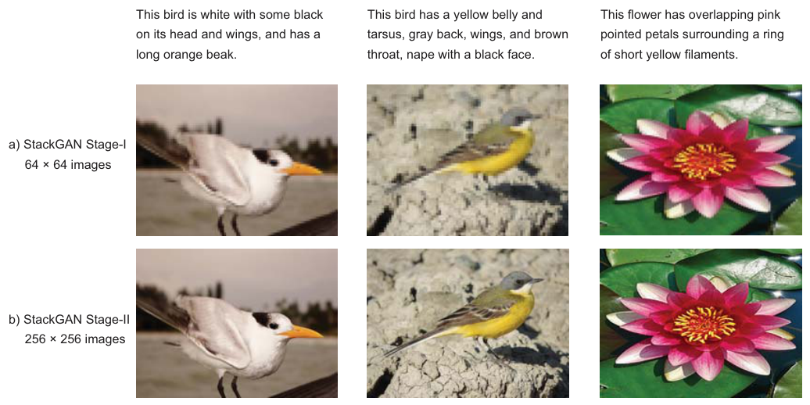
8.3.2 图到图翻译（Pix2Pix GAN）#
图到图翻译（Image-to-Image Translation）：在足够训练数据的前提下，把场景的一种表示翻译成另一种。灵感来自语言翻译——同一个想法可以用多种语言表达，同一个场景也可以渲染成灰度图、RGB 图、语义标签图、边缘草图……图 8.15 展示了一排任务：街景分割标签 → 真实街景、灰度 → 彩色、产品草图 → 产品照片、白天照片 → 夜景。
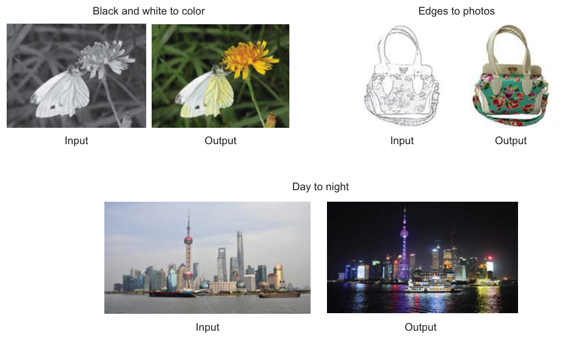
Pix2Pix 由 Phillip Isola 等人于 2016 年设计，是通用图到图翻译任务的 GAN 家族成员。架构与 GAN 概念一脉相承：生成器输出逼真的合成图像，判别器区分真图（数据集）与假图（生成）。训练过程也一样：判别器直接更新，生成器通过判别器更新——两个模型在对抗过程中同步训练，生成器想更会骗，判别器想更会抓。
Pix2Pix 的新颖之处：它学习一个适配当前任务与数据的损失函数，因此能广泛适用于各种设定。它属于条件 GAN（conditional GAN, cGAN）——输出图像的生成以输入源图为条件。判别器同时拿到源图和目标图，必须判断"目标图是否是源图的一个合理变换"。
Pix2Pix 在许多图到图翻译任务上结果相当能打。原书推荐去 affinelayer.com/pixsrv 玩 Isola 团队的交互 demo：猫或产品的草图转照片、建筑立面转真实图像。
8.3.3 超分辨率 GAN（SRGAN）#
一类 GAN 能把低分辨率图像变成高分辨率图像——超分辨率生成对抗网络（Super-Resolution GAN, SRGAN），由 Christian Ledig 等人于 2016 年提出。图 8.16 是它把低分辨率图"脑补"成高分辨率图的效果。
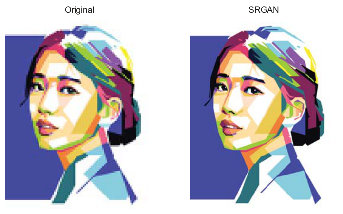
8.3.4 准备好动手了吗？#
GAN 在创造"从未存在过的新现实"上潜力巨大，本节的几例只是冰山一角——新应用每隔几周就冒出来一个。想继续上手更多 GAN 应用，推荐 Erik Linder-Norén 维护的 PyTorch-GAN 仓库（github.com/eriklindernoren/PyTorch-GAN）：收录了大量 GAN 变体的 PyTorch 实现（DCGAN、WGAN-GP、SRGAN、Pix2Pix 等一应俱全）。本章项目代码也正是参照它的风格写成的。
8.4 项目：动手建自己的 GAN#
本项目的目标：用卷积层搭建生成器和判别器——即 DCGAN（8.1.1，Radford 等人 2016 首创，生成新图像的效果令人印象深刻）。训练数据集：Fashion-MNIST。
数据集概况（图 8.17）：
| 项目 | 数值 |
|---|---|
| 训练集 | 60,000 张灰度图 |
| 测试集 | 10,000 张 |
| 单张尺寸 | 28×28 灰度 |
| 类别 | 10 类（每图一个标签） |
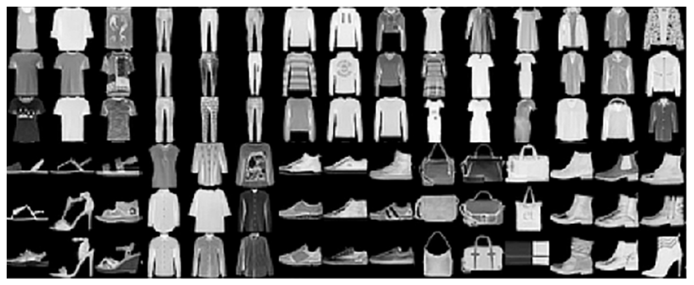
Fashion-MNIST 定位是原 MNIST 的直接替代基准。作者选灰度图的理由很实在：单通道比三通道彩色图省算力，没有 GPU 的个人电脑也能训。10 个类别的标签：
| 标签 | 类别 | 标签 | 类别 |
|---|---|---|---|
| 0 | T-shirt/top（T 恤） | 5 | Sandal（凉鞋） |
| 1 | Trouser（裤子） | 6 | Shirt（衬衫） |
| 2 | Pullover（套头衫） | 7 | Sneaker（运动鞋） |
| 3 | Dress（连衣裙） | 8 | Bag（包） |
| 4 | Coat（外套） | 9 | Ankle boot（短靴） |
Step 1：导入库#
# ===== 书 8.4 Step 1：导入库 =====
import numpy as np
import torch
import torch.nn as nn
from torchvision import datasets, transforms
from torch.utils.data import DataLoader
import matplotlib.pyplot as plt
Step 2：下载并可视化数据集#
torchvision 内置 FashionMNIST 数据集，download=True 一行搞定下载。关键预处理：把训练集缩放到 -1 到 1，让模型收敛更快（图像缩放的原理见第 4 章"数据归一化"一节）：
# ===== 书 8.4 Step 2：下载 + 归一化到 [-1, 1] =====
# 目标：[0,255] → [-1,1]（即 X/127.5 - 1 的效果）
transform = transforms.Compose([
transforms.ToTensor(), # [0,255] → [0,1]
transforms.Normalize([0.5], [0.5]), # [0,1] → [-1,1]：(x - 0.5) / 0.5
])
dataset = datasets.FashionMNIST(root='data', train=True,
download=True, transform=transform)
# ToTensor 已给出通道在前的 (1, 28, 28)，无需手动补通道维
loader = DataLoader(dataset, batch_size=32, shuffle=True, drop_last=True)
# drop_last=True：丢掉不满的尾批，保证每个批次都是 32 张，与 valid/fake 标签形状对齐
顺手玩一把书中"彩蛋"——把第 3343 张图的像素矩阵直接打印在图上（图 8.18）：
# ===== 书 8.4 Step 2（续）：可视化像素矩阵 =====
def visualize_input(img, ax):
ax.imshow(img, cmap='gray')
width, height = img.shape
thresh = img.max() / 2.5
for x in range(width):
for y in range(height):
ax.annotate(str(round(img[x][y], 2)), xy=(y, x),
horizontalalignment='center', verticalalignment='center',
color='white' if img[x][y] < thresh else 'black')
fig = plt.figure(figsize=(12, 12))
ax = fig.add_subplot(111)
visualize_input(dataset.data[3343].numpy(), ax) # 用原始 [0,255] 的数据画
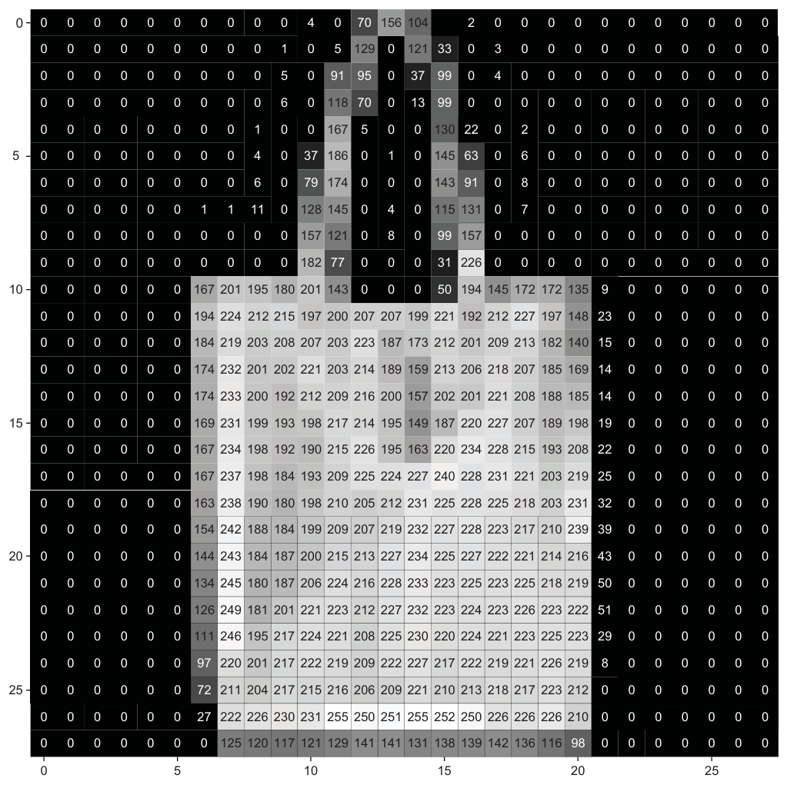
原书笔误（一）：项目版生成器的输出激活与归一化不匹配
项目把数据归一化到 [-1, 1]，但书里 Step 3 的生成器最后一层用的却是 ReLU 激活——ReLU 的输出范围是 \([0, +\infty)\)，永远产不出负值（图像的暗半边），与 [-1,1] 的目标分布对不上。8.1.3 教学版用的 tanh（值域恰为 [-1,1]）才是与这套归一化严格匹配的搭配。本笔记输出层用 tanh，同时按项目节文字描述的 "conv ⇒ BN ⇒ ReLU" 顺序，修正了书项目代码里激活与 BN 顺序颠倒的问题。
Step 3：搭建生成器（项目版）#
输入是 8.1.5 里的噪声向量 \(z\)。架构（图 8.19）：
- 第一层全连接，随后 Reshape 成"又深又窄"的 7×7×128（原始 DCGAN 论文 reshpe 成 4×4×1024）；
- 上采样层把特征图从 7×7 翻到 14×14，再翻到 28×28；
- 全程三个卷积层，配 BN 和 ReLU，一般套路：卷积 ⇒ 批归一化 ⇒ ReLU；
- 最后一层转置卷积输出 28×28×1。
# ===== 书 8.4 Step 3：项目版生成器 =====
LATENT_DIM = 100 # 噪声维度，与书一致
class Generator(nn.Module):
def __init__(self, latent_dim=LATENT_DIM):
super().__init__()
self.fc = nn.Linear(latent_dim, 128 * 7 * 7) # 全连接：100 维噪声 → 6272 维
# 上采样用 stride=2 的转置卷积（可学习的上采样），一步把宽高翻倍
self.up1 = nn.ConvTranspose2d(128, 128, 4, 2, 1) # 7×7 → 14×14
self.bn1 = nn.BatchNorm2d(128, momentum=0.2) # momentum：running stats 更新系数
self.up2 = nn.ConvTranspose2d(128, 64, 4, 2, 1) # 14×14 → 28×28
self.bn2 = nn.BatchNorm2d(64, momentum=0.2)
self.out = nn.Conv2d(64, 1, 3, padding=1) # → 1×28×28
def forward(self, z):
x = torch.relu(self.fc(z)) # 100 → 6272
x = x.view(-1, 128, 7, 7) # Reshape → 7×7×128
x = torch.relu(self.bn1(self.up1(x))) # conv ⇒ BN ⇒ ReLU（按书 8.4 文字顺序）
x = torch.relu(self.bn2(self.up2(x)))
return torch.tanh(self.out(x)) # tanh 输出，匹配 [-1,1] 归一化
# 原书项目代码此处是 ReLU——见上方 warning 框
generator = Generator()
28×28 之后不再上采样——已经等于 MNIST/Fashion-MNIST 的图像尺寸；自己的问题自己调。
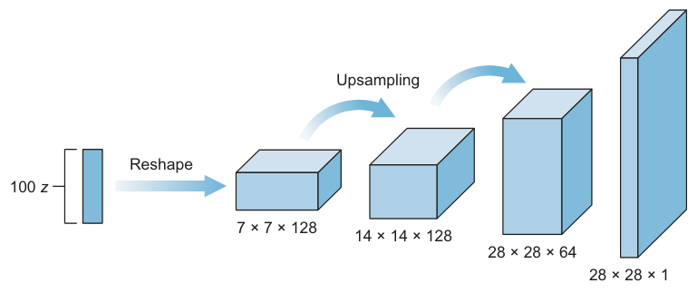
Step 4：搭建判别器（项目版）#
判别器就是我们之前写过很多次的卷积分类器（图 8.20）：输入 28×28×1 的图像，几层卷积后接全连接输出层，sigmoid 输出真假概率。设计要点：
- 深度安排：第一层用 32 或 64 个 filter，之后逐层翻倍。本书实现从 32 开始：32 → 64 → 128 → 256；
- 下采样不用池化层，只用带步幅的卷积（strided convolution）——与 Radford 等人的 DCGAN 实现一致；
- 用 BN 和 Dropout 优化训练（第 4 章的老朋友）；
- 四层卷积的一般套路：卷积 ⇒ 批归一化 ⇒ LeakyReLU。
# ===== 书 8.4 Step 4：项目版判别器 =====
# 与 8.1.2 教学版完全同构（原书两次给的就是同一份结构），此处给出完整可运行版
discriminator = Discriminator() # 直接复用 8.1.2 定义的类
# 结构：Conv32(s2) → LReLU → Drop
# → Conv64(s2) → ZeroPad(7×7→8×8) → BN → LReLU → Drop
# → Conv128(s2) → BN → LReLU → Drop
# → Conv256(s1) → BN → LReLU → Drop
# → Flatten(4096) → Linear(4096→1) → Sigmoid
原书笔误（二）：第一层 filter 数，文字与代码对不上
项目节正文说 "we start with 64 layers, then 128, and then 256"（从 64 开始），但代码和图 8.20 里第一层都是 32 个 filter（输出 14×14×32）。以代码和图为准：32 → 64 → 128 → 256。
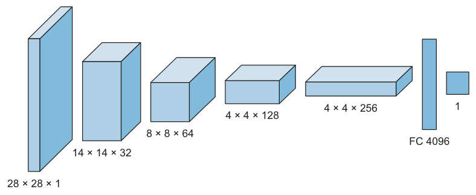
Step 5：搭建组合模型#
如 8.1.4 所讲：训练生成器需要一个同时装着生成器和判别器的组合网络（图 8.21）——输入噪声信号 \(z\)，输出判别器对"生成图是真是假"的预测。务必在组合模型里禁用判别器的训练：训练生成器时不许判别器更新权重，但判别器必须留在链路里当考官。
# ===== 书 8.4 Step 5：组合模型 =====
# PyTorch 里组合模型无需新建网络对象：
# 训练循环中 discriminator(generator(z)) 的串联前向，
# 就是图 8.21 那条"噪声 → G → D"链路。要准备的是两个优化器和一个冻结开关。
# 优化器超参（书）：Adam(lr=0.0002, beta_1=0.5) → betas=(0.5, 0.999)
optimizer_D = torch.optim.Adam(discriminator.parameters(), lr=0.0002, betas=(0.5, 0.999))
optimizer_G = torch.optim.Adam(generator.parameters(), lr=0.0002, betas=(0.5, 0.999))
criterion = nn.BCELoss() # 二元交叉熵损失（D 已带 Sigmoid）
# —— 冻结开关：控制参数的 requires_grad ——
def freeze(net): # 冻结：参数停止累积梯度，反向传播穿过它但不更新它
for p in net.parameters():
p.requires_grad = False
def unfreeze(net): # 解冻：恢复梯度累积（车道 1 要更新 D）
for p in net.parameters():
p.requires_grad = True
# 训练循环里的用法（见 Step 6）：
# 阶段 1 unfreeze(discriminator) → 训 D
# 阶段 2 freeze(discriminator) → 训 G，误差只许改 G
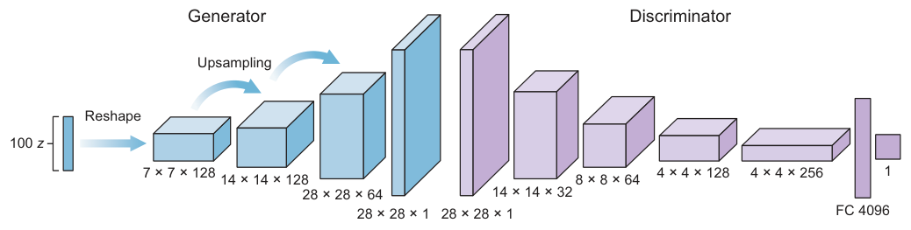
有了双优化器，冻结是不是多余的？
optimizer_D 只装 D 的参数、optimizer_G 只装 G 的参数，严格说即使不冻结，optimizer_G.step() 也碰不到 D 的权重。但 freeze(discriminator) 仍然值得写：一是冻结后阶段 2 的反向传播不再给 D 的参数累积梯度，省内存省计算；二是把博弈规则明确钉死——生成器的误差只许改生成器，不给"D 的参数被误塞进 G 的优化器"这类失误留任何机会。
Step 6：搭建训练函数#
训练 GAN = 训练两个网络：判别器 + 组合网络。train() 函数接收三个参数：epoch 数、batch size、save_interval（隔多少 epoch 存一次结果图）。
# ===== 书 8.4 Step 6：训练函数 =====
def train(epochs, batch_size=32, save_interval=50):
for epoch in range(epochs):
# ---------- 阶段 1：训练判别器 ----------
unfreeze(discriminator) # 打开 D 的梯度开关：本车道更新 D
idx = np.random.randint(0, len(dataset), batch_size) # 随机抽 batch 个索引
imgs = torch.stack([dataset[i][0] for i in idx]) # 真图批次
valid = torch.ones(batch_size, 1) # 对抗博弈的"标准答案"标签：真=1
fake = torch.zeros(batch_size, 1) # 假=0
noise = torch.randn(batch_size, LATENT_DIM) # 采样噪声 N(0,1)
with torch.no_grad():
gen_imgs = generator(noise) # 生成器造一批假图
# 真图 → 目标 1；假图 → 目标 0（书：real classified as ones, generated as zeros）
d_loss_real = criterion(discriminator(imgs), valid)
d_loss_fake = criterion(discriminator(gen_imgs.detach()), fake)
d_loss = (d_loss_real + d_loss_fake) / 2 # 书：0.5 * np.add(...)
optimizer_D.zero_grad(); d_loss.backward(); optimizer_D.step() # 第一次反向：更新 D
# ---------- 阶段 2：训练组合网络（= 训生成器） ----------
freeze(discriminator) # 关掉 D 的梯度开关：误差只许改 G
noise = torch.randn(batch_size, LATENT_DIM)
g_loss = criterion(discriminator(generator(noise)), valid)
# 目标 valid（全 1）：盼着判别器把假图当成真的
optimizer_G.zero_grad(); g_loss.backward(); optimizer_G.step() # 第二次反向：更新 G
# ---------- 打印进度 ----------
print(f"{epoch} [D loss: {d_loss:.6f}] [G loss: {g_loss:.6f}]")
# 每 save_interval 个 epoch 存一批生成样图
if epoch % save_interval == 0:
plot_generated_images(epoch, generator)
配套的 plot_generated_images()：生成 100 张图排成 10×10 网格，存成 gan_generated_image_epoch_%d.png：
# ===== 书 8.4 Step 6（续）：结果可视化 =====
def plot_generated_images(epoch, generator, examples=100, dim=(10, 10), figsize=(10, 10)):
noise = torch.randn(examples, LATENT_DIM)
with torch.no_grad():
generated_images = generator(noise)
generated_images = generated_images.reshape(examples, 28, 28)
plt.figure(figsize=figsize)
for i in range(generated_images.shape[0]):
plt.subplot(dim[0], dim[1], i + 1)
plt.imshow(generated_images[i], interpolation='nearest', cmap='gray_r')
plt.axis('off')
plt.tight_layout()
plt.savefig(f'gan_generated_image_epoch_{epoch}.png')
原书的训练日志长这样（图 8.22 重排）——前 16 个 epoch，D 的损失与准确率来回波动，G 的损失也在 0.7~2.2 之间起伏，这就是博弈的常态：
0 [D loss: 0.963556, acc.: 42.19%] [G loss: 0.726341]
1 [D loss: 0.707453, acc.: 65.62%] [G loss: 1.239887]
2 [D loss: 0.478705, acc.: 76.56%] [G loss: 1.666347]
3 [D loss: 0.721997, acc.: 60.94%] [G loss: 2.243804]
4 [D loss: 0.937356, acc.: 45.31%] [G loss: 1.459240]
5 [D loss: 0.881121, acc.: 50.00%] [G loss: 1.417385]
6 [D loss: 0.558153, acc.: 73.44%] [G loss: 1.393961]
7 [D loss: 0.404117, acc.: 78.12%] [G loss: 1.141378]
8 [D loss: 0.452483, acc.: 82.81%] [G loss: 0.802813]
9 [D loss: 0.591792, acc.: 76.56%] [G loss: 0.690274]
10 [D loss: 0.753802, acc.: 67.19%] [G loss: 0.934047]
11 [D loss: 0.957626, acc.: 50.00%] [G loss: 1.140045]
12 [D loss: 0.919308, acc.: 51.56%] [G loss: 1.311618]
13 [D loss: 0.776363, acc.: 56.25%] [G loss: 1.041264]
14 [D loss: 0.763993, acc.: 56.25%] [G loss: 1.090716]
15 [D loss: 0.754735, acc.: 56.25%] [G loss: 1.530865]
16 [D loss: 0.739731, acc.: 68.75%] [G loss: 1.887644]
Step 7：开训并观察结果#
# ===== 书 8.4 Step 7：启动训练 =====
train(epochs=1000, batch_size=32, save_interval=50)
# 与书一致：1000 个 epoch，每 50 个 epoch 存一次图
# 原书作者自己跑了 10,000 个 epoch
跑起来后训练进度按图 8.22 的格式逐行打印。作者亲测 10,000 个 epoch 的结果（图 8.23）：
- Epoch 0：纯随机噪声，没有任何模式与有意义的数据；
- Epoch 50：模式开始成形——最明显的特征是亮像素从图像中心聚拢、四周偏暗。原因：训练数据里所有物体都摆在图像正中央；
- Epoch 1,000：能看清形状了，大概率能猜出喂给 GAN 的是哪类数据；
- Epoch 10,000：生成器已经非常擅长再造训练集里不存在的新图。随便挑一张——比如左上那件连衣裙：这是一件全新的连衣裙设计，训练集里没有它；GAN 从训练集学到了连衣裙的图案规律，然后自己设计了一件。
想更精细：训练更久，或把生成器网络做得更深。
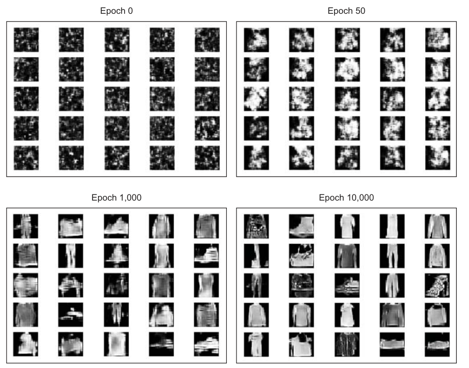
收尾：为什么选 Fashion-MNIST，下一步去哪#
作者选 Fashion-MNIST 的三个理由：图像小、单通道灰度（无 GPU 的本地机器算得起）；数据非常干净——全部居中、噪声少，几乎不用预处理就能开训；是理想的"第一个 GAN 项目"玩具数据集。
想换更大的数据集练手，作者给的清单：
| 数据集 | 说明 |
|---|---|
| CIFAR | 多类别小尺寸彩色图（cs.toronto.edu/~kriz/cifar.html） |
| Quick, Draw! | 谷歌出品，写作时世界最大的涂鸦数据集（quickdraw.withgoogle.com） |
| Stanford Cars | 16,000+ 张汽车图、196 个车型——训练 GAN 给你设计一款梦想之车 |
坑与陷阱#
GAN 新手最容易踩的 8 个坑
- BN momentum 方向搞反：
nn.BatchNorm2d(64, momentum=0.2)里 momentum 是 running stats 更新时新批统计量的权重（new_running = 0.8×旧 + 0.2×新），数字越小 running stats 变得越慢；推理/生成图时记得model.eval()，用的就是这套 running stats。 - 循环里忘了 freeze/unfreeze：阶段 1 前必须
unfreeze(discriminator)，否则 D 收不到梯度、原地踏步；阶段 2 前要freeze(discriminator)，否则训 G 时 D 的参数也在白白累积梯度（双优化器下虽不会被误更新，但浪费内存、博弈边界也不清晰）。 - PyTorch 忘了 detach：训判别器时假图要
gen_imgs.detach()，否则反向传播会顺着生成链更新 G——两个网络的博弈边界就乱了。 - 项目版输出层 ReLU + [-1,1] 归一化不匹配：tanh 才是 [-1,1] 的正确搭档（教学版是对的）。
- 判别器太好/太坏都卡死 G：太强 → 梯度消失；太弱 → 反馈是噪声。D 的准确率长期逼近 0% 或 100% 都是红灯。
- 拿 loss 曲线读 GAN：G、D 的 loss 都不单调，"G loss 上升"未必是变差——因为对手也在变强。评估靠看图 + IS/FID。
- 模式坍缩：生成器只出少数几款图时要警惕多样性丢了，别被"单张很逼真"迷惑。
- FID 样本太少：不足约 50,000 张时会高估 FID、方差巨大，别拿小样本 FID 排名模型。
速览#
- GAN（Goodfellow 2014）= 生成器 + 判别器互相对抗：一个造假、一个打假，在博弈中共同变强（拳击手/假钞贩子 vs 警察）。
- 判别器是普通 CNN 二分类器：卷积堆叠 + sigmoid，输出 0~1 真假概率。
- 生成器是"倒置 CNN"：噪声向量 → Reshape 成小体积 → 反复上采样放大到目标尺寸，输出 tanh（[-1,1]）。
- DCGAN（Radford 2016）把 MLP 换成卷积层；如今所有 GAN 默认都带卷积。
- 训练分两条车道：单独训 D（真图→1，假图→0）；组合模型训 G（冻结 D，误差穿过 D 只更新 G）。
- minimax 目标函数：\(\min_G \max_D V(D,G) = E[\log D(x)] + E[\log(1-D(G(z)))]\)——D 最大化两项，G 最小化第二项；log 保证错得越狠罚得越重。
- 实践中 G 用 non-saturating loss（最大化 \(\log D(G(z))\)）避免训练初期梯度饱和。
- GAN 没有客观损失可用：评估靠人工检查 + Inception Score（越高越好）+ FID（越低越好，需约 5 万样本）。
- 三大应用：StackGAN（文字→256×256 图）、Pix2Pix（图到图翻译，cGAN，判别器同时看源图与目标图）、SRGAN（超分辨率）。
- 项目七步跑通 Fashion-MNIST DCGAN：Adam(lr=0.0002, beta1=0.5)、batch_size=32、每 50 epoch 存图；epoch 0 是噪声，epoch 10000 能设计训练集中不存在的新服饰。
术语速查#
| 英文 | 中文 | 一句话 |
|---|---|---|
| Generative Adversarial Network (GAN) | 生成对抗网络 | 两个网络对抗训练，学会"想象"新样本 |
| Generator | 生成器 | 随机噪声 → 以假乱真的假图 |
| Discriminator | 判别器 | 输出图像为真的概率（0~1） |
| Adversarial Training | 对抗训练 | 双方互为对手、在竞争中共同提升 |
| DCGAN | 深度卷积 GAN | 生成器/判别器都用卷积层的 GAN |
| Latent / Noise Vector | 潜向量 / 噪声向量 | 生成器的输入 z（本章长度 100） |
| Combined Model | 组合模型 | 生成器 + 冻结的判别器，专用于训练 G |
| Freezing Weights | 冻结权重 | 训 G 时禁止 D 的参数更新（requires_grad=False） |
| Zero-sum Game | 零和博弈 | 一方得一分，另一方必失一分 |
| Minimax | 极小极大 | D 最大化、G 最小化同一个价值函数 |
| Value Function \(V(D,G)\) | 价值函数 | 博弈的"总分"，双方优化目标 |
| Mode Collapse | 模式坍缩 | 生成器放弃多样性、只出少数几款图 |
| Non-saturating Loss | 非饱和损失 | G 改为最大化 \(\log D(G(z))\)，避开早期梯度消失 |
| Inception Score | Inception 分数 | 置信度 × 多样性，越高越好 |
| Fréchet Inception Distance (FID) | Fréchet Inception 距离 | 真/假特征高斯分布的距离，越低越好 |
| Wasserstein-2 Distance | Wasserstein-2 距离 | FID 使用的分布距离，又称 Fréchet 距离 |
| StackGAN | —— | 文字生图：两阶段 64×64 → 256×256 |
| Pix2Pix | —— | 图到图翻译的 cGAN |
| Conditional GAN (cGAN) | 条件 GAN | 生成过程以输入（源图/文本）为条件 |
| SRGAN | 超分辨率 GAN | 低分辨率图 → 高分辨率图 |
| Upsample / Transposed Conv | 上采样 / 转置卷积 | nn.Upsample 复制行列放大 vs 转置卷积可学习上采样 |
| Strided Convolution | 步幅卷积 | 判别器的下采样手段（替代池化） |
| Fashion-MNIST | —— | 60k 训练 + 10k 测试，28×28 灰度 10 类 |